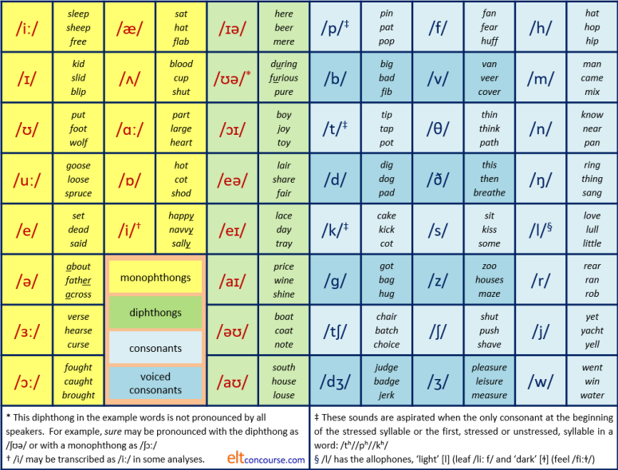
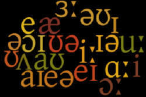
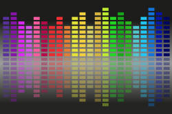
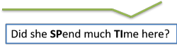

Transcription: a teach-yourself course
This guide also forms Strand 6 of the Teacher Development section.
This guide concerns transcription, not a description of the
sounds of English. For a description of how the sounds of
English are made and what mouth parts do, see
the
in-service guides to pronunciation (new tab).
This course is:
- Firstly, a guide to teaching yourself to transcribe words in what are called their citation forms, i.e., the way they are pronounced when you ask someone to read a list carefully.
- Secondly, a guide to how things are pronounced in normal but not very rapid or mumbled connected speech.
- Thirdly, to provide you with some practice at transcribing what you read and what you hear (see the link at the end for the latter).
- Free. All materials on this site are
covered by a Creative Commons licence which means that you
are free to share, copy and amend any of the materials but
under certain conditions.
You may not use this material for commercial purposes. The material may be used with fee-paying learners of English but may not be used on fee-paying courses for teachers. Small excerpts from materials, conventionally attributed, may be used on such courses but wholesale lifting of materials is explicitly forbidden. There is, of course, no objection at all to providing fee-paying course participants with a link to this guide or any other materials on this site. Indeed, that is welcomed.
The components of the course |
This is what the course covers.
If you cannot transcribe or your transcription skills are shaky, do
the whole course.
If you are here for a specific area of transcription or returning for
some revision, the following will help you find what you need.
Clicking on -index- at the end of
each section will
return you to this menu.
 |
Dialect |
The sounds transcribed here are generally those of an educated
southern British-English speaker. That is not intended to
imply that the dialect is somehow better than others. It is
one of the conventional ways to do these things.
American English pronunciation and any of the other multiple
standard forms of the language would be different, especially but
not solely, concerning the vowel sounds.
Where there are significant differences (for example in the use of a
rhotic or non-rhotic pronunciation) it will be noted.
 |
Why should you learn to transcribe? |
There are teachers of English language who can lead successful careers in the classroom without ever using more than a minimal amount of phonemic transcription. Some use none at all. There are, however, six good reasons why knowing how to transcribe sounds is a useful skill for a teacher and knowing how to read transcriptions is a useful skill for learners. Here they are:
- Independence
- For the teacher, the ability to transcribe what is heard allows rapid identification of troublesome sounds and other issues that need to be brought to the attention of learners. One can, of course, rely on a pronouncing or other form of dictionary to do the work but that is time consuming and not always possible. Freeing yourself from the need to consult a website or a dictionary for the pronunciation of words allows you to focus on what's important.
- For the learner, the ability to read the transcriptions of
pronunciation in a dictionary, mono- or bi-lingual, gives
autonomous access
to how the word should sound without reference to the spelling
or to a model.
Many people, dazzled by the spelling, are unaware that, for
example, no and know are identically
pronounced or that the words right, rite and write
also share a single pronunciation.
By the same token, it may not at first be obvious that in the words troupe, bought, should, cough and tourist the combination of the letters o and u is differently pronounced in each case.
It is, of course, possible for the teacher to model the pronunciations in the classroom but the ability to note them down in phonemic script is a valuable learning tool.
- Systematicity
Phonemic transcription is independent of the language insofar as it is systematic. Many attempts have been made to spell English words phonetically but without some unambiguous system of symbols such attempts fail. Unless we can rely on a generally accepted system, there is, for example, no easy way to show the pronunciation of diphthongs and the difference between long and short vowels without resorting to a range of odd and obscure marks over letters such as ç, â, œ and so on. Having a single system works. - Reliability
As you may know, spelling in English is not a reliable guide to how a word is pronounced so, even if a learner can correctly recognise and produce the different pronunciations of the o in love and move that is not a guide to knowing how shove or hove are pronounced at all. Access to the phonemic script allows learners instantly to relate the pronunciation of words to one another and not to pronounce hove as if it rhymed with love or shave as if it rhymed with have.
Teachers who can transcribe have the ability to make this clear and learners who can read transcription are able to make a note of the difference. - Ambiguity
Even when words are spelled the same, they may be differently pronounced (a phenomenon known as homography) so we get, for example, entrance meaning a way in and a verb meaning bewitch or hold someone's complete attention. The words are very differently pronounced. Other examples will include row, minute, live and hundreds more. Being able instantly to spot the difference is a skill learners need to develop if they are sensibly to use a dictionary and teachers need instantly to point out when teaching. The best way to do that is via phonemic transcription. - Professionalism
The ability to use a simple, if technical, area of linguistics is an indicator of professional competence. An inability to read or write a transcription of how something is pronounced is a handicap when it comes to teaching pronunciation and most learners expect formal pronunciation work to be part of what happens in the classroom. - Correction and needs analysis
The ability to transcribe how learners pronounce certain phonemes and words is helpful when it comes to researching the needs of your learners. Having a transcription of what they actually produce next to a transcription of what they should produce helps you to identify what needs work and what is adequate.
For learners, too, a transcription of what they say and the model to compare it to helps them to notice the gap.
If even some of that sounds convincing, read on.
 |
The sounds of English: phonemes, allophones and minimal pairs |
We are talking about
English sounds here. The study
of language sounds (phonemic analysis) is
language specific. This
mini-course is concerned with the transcription of English sounds.
You will not, therefore, find mention of the vowel /ɯ/ (which occurs
in Turkish, Korean, Irish and many other languages) or /ɾ/ which is
the Spanish trilled /r/ sound that does not appear in English but is
common in, e.g., Japanese and other languages. The chart below
does not, therefore, describe all the sounds of language, just the
ones that are used in English (and not all of them as we shall
shortly see).
- Phonemes:

-
In English the sounds /p/ and /b/ are phonemes because changing
one to the other affects the meaning of a word. The sentences
I gave him a bat
and
I gave him a pat
are distinguished from each other only by the initial sound in bat or pat. However, the sense of each sentence is very different.
This is called the Minimal Pair Test:
If you change a single sound in a word in the same place and make a new word, the sound you have changed is a phoneme in that language.
In other languages, most varieties of Arabic, for example, these two sounds, /b/ and /p/, are not phonemes and changing one to the other will not change the meaning of a word (but it might sound odd).
Here are some examples of minimal pairs formed with other consonant sounds. Don't worry about the transcriptions at this stage; they are just for reference. Focus on the left-hand column in each of these lists. -
You can readily see that in each case there is only one change to the transcription so any two of these words form a minimal pair. In this case, we have changed the first sounds to make things simpler but, of course, we can change any sound in a pair to make a minimal pair. For example:words transcriptions hut
but
shut
mutt
jut
let
set
met
bet
jet/hʌt/
/bʌt/
/ʃʌt/
/mʌt/
/dʒʌt/
/let/
/set/
/met/
/ˈbet/
/ˈdʒet/
are also examples of minimal pairs.words transcriptions mother
mutter
liver
litter
spend
spent
roof
root/ˈmʌð.ə/
/ˈmʌ.tə/
/ˈlɪ.və/
/ˈlɪ.tə/
/spend/
/spent/
/ruːf/
/ruːt/
Vowel sounds can also form minimal pairs, so we get, for example:
which are examples of vowel-sound minimal pairs in English and any two of the words form a pairing with only one change to the vowel.words transcriptions boat
boot
bought
bite
bit
bait
Baht
but/bəʊt/
/buːt/
/ˈbɔːt/
/baɪt/
/bɪt/
/beɪt/
/ˈbɑːt/
/bʌt/
In some languages, not all these vowel sounds are produced and in some, there are vowels that English does not use at all. For example, in Greek there is no distinction between a long 'e' sound as in feet and the short sound in fit. Speakers of the language often use either, both or a sound midway between them without changing the meaning of a word. The sounds do not, therefore, distinguish between minimal pairs in that language.
You can see that there are, in fact, two vowel sounds in the words boat, bite and bait but the vowel in these cases is called a diphthong and for the purposes of identifying a minimal pair, that counts as a single vowel. You may also have seen that the letter 'j' in jut and jet in the first set is formed from two symbols (/dʒ/) and that, too, counts as a single sound. - Allophones:

- Allophones are slightly different pronunciations of certain phonemes
which do not affect the meaning of what is said (although it may sound
odd). We saw above that /p/ and /b/ are not phonemes in most
varieties of Arabic as are, incidentally, /f/ and /v/ in some
varieties. Changing one for the other does not affect the
meaning of what you say. You can, of course, pronounce
both sounds in Arabic and a hearer may notice the difference but
will not assume that you are using a different word, just
slightly different ways of making the sound. In this case,
the two sounds are allophones.
An allophone is any of the various ways to say a phoneme in a language, which do not contribute to distinctions of meaning. In other words, there may be many ways to pronounce a sound, all slightly different, but the differences do not change the meaning. Phonemes are sets of allophones, therefore.
All languages have a number of allophones. When we are doing a simple phonemic transcription in English, it is not necessary to transcribe allophones differently because they carry no semantic signals. That is not the case in other languages, of course.
Here are some examples in English:- the sound /t/ can be pronounced with and without a
following /h/ sound
Compare the sounds in track and tack
In the first, when the /t/ is followed by another consonant, the sound is without much aspiration (transcribed as /t/) but in the second, the sound is aspirated and transcribed as /tʰ/.
In English, these sounds are not phonemes because you can change /t/ to /tʰ/ without changing the meaning of a word. In some languages, Mandarin, for example, /t/ and /tʰ/ are separate phonemes and swapping them around will change the meaning of what you say. - The same applies to /k/ vs. /kʰ/ (ski vs. cat). When /k/ is not the first sound in the word, it lacks much aspiration but when it is the first sound, or, like /t/ when it is the first sound of a syllable, it carries the aspiration and is transcribed that way.
- The sound /p/ exhibits the same characteristic. Make it the first sound in a word or a syllable, such as in copper and it will be aspirated to /pʰ/.
- The /l/ sound in English also has two discernible
pronunciations which occur at the beginning and end of the
word lull (/lʌl/). Again, because the sounds
to not carry any semantic information in English they are
not usually transcribed differently:
- the light [l] as in lap which is simply transcribed as /læp/ with the sound pronounced with the tongue tip on the alveolar ridge behind the top teeth. This pronunciation occurs when /l/ is followed by any vowel sound so pull it is transcribed as /pʊl.ɪt/.
- the dark version (which has the symbol [ɫ]) and occurs at the end of words like full, transcribed as [fʊɫ] with the tongue further back in the mouth approaching the velum or soft palate. The sound is referred to, incidentally, as velarised. The pronunciation is used when /l/ is not followed by a vowel so pull that is transcribed as /pʊɫ.ðæt/. The transcription may safely be left as /l/ in all cases because it is simpler and we have a rule for the pronunciation of the allophones.
- Allophones of vowels are also quite common. For
example:
- in Standard British English, the word nurse is transcribed with
a long vowel (as /nɜːs/) but in rapid speech the vowel may be
shortened to give /nɜs/. No-one listening will mistake the word
or assume that the word with a shorter vowel carries a different
meaning so the transcription need not distinguish too
carefully. The sounds are allophones.
In Standard American English the word is transcribed as /ˈnɝːs/ with the tiny /r/ denoting that the 'r' sound is pronounced by most American-English speakers but, again, that is an allophonic, not phonemic, difference because the word remains the same with the same meaning. In some varieties of British English, too, the /r/ will be pronounced so we will have /nɜːrs/ as the transcription. - the words beauty and booty may be pronounced identically as /ˈbuː.ti/ although the standard form for beauty is /ˈbjuː.ti/ and for booty, it is /ˈbuː.ti/. It makes no difference to meaning if your dialect does not distinguish.
- in Standard British English, the word nurse is transcribed with
a long vowel (as /nɜːs/) but in rapid speech the vowel may be
shortened to give /nɜs/. No-one listening will mistake the word
or assume that the word with a shorter vowel carries a different
meaning so the transcription need not distinguish too
carefully. The sounds are allophones.
- the sound /t/ can be pronounced with and without a
following /h/ sound
- Minimal pairs:

- As we saw above, pairs of words which are distinguished only by a change in one
phoneme in the same place are called minimal pairs. For example, hit-hat,
kick-sick, fit-bit, sheep-ship, jerk-dirk, hot-cot, love-live
etc. are all distinguished in meaning by a single change to a vowel
or a consonant. That's in English, of course. It bears
repeating that what is an allophone in English may be a phoneme in
other languages and vice versa.
Minimal pairs can also be distinguished by where the stress falls. For example:
If you stress the word export on the first syllable, you are referring to the noun: EXport. Stress the second syllable and you refer to the verb: exPORT.
Stress the word convict on the first syllable and you refer to a resident of a prison: CONvict. Stress the second syllable and you refer to act of finding someone guilty of an offence: conVICT.
One can also have minimal sets in which there are more than two words but they are all distinguished from each other by a single difference. For example,
sit, set, sat, sot, suit and cite
all differ by a single vowel (/sɪt/, /set/, /sæt/, /sɒt/, /suːt/, /saɪt/ respectively)
and
fit, hit, bit, knit, lit, sit and kit
is also a minimal set because only the initial consonant distinguishes between them (/fɪt/, /hɪt/, /bɪt/, /nɪt/, /lɪt/, /sɪt/, /kɪt/ respectively).
For a list of useful minimal pairs (for your own practice and use in the classroom, click here (new tab).
Click here to take a short test
to see if you can match minimal pairs. There are no
transcriptions in this test so you will have to say the words aloud
or to yourself to find the pairs.
You can click on the other answers to see what feedback you get.
English phonemes |
Here's the list you'll learn. If you want to download this chart as a PDF document to keep by you as reference, click here.

The symbols we are using in the course are those introduced by Gimson (1962) in the first edition of An Introduction to the Pronunciation of English.
Consonants |
The consonants are the easiest so we can start there. Most of them are transcribed using the normal letters of the alphabet and they are often the same as the written form of the letter but remember that spelling in English is not a reliable guide to pronunciation. There are five sounds which are denoted by special symbols and these you have to learn:
- /ʒ/ which is the sound represented by the letter 's' in pleasure (/ˈple.ʒə/)
- /ʃ/ which is the sound represented by the letters 'sh' in sham (/ʃæm/)
- /θ/ which is the sound represented by the letters 'th' in thank (/θæŋk/)
- /ð/ which is the sound represented by the letters 'th' in mother (/ˈmʌð.ə/)
- /ŋ/ which is the sound represented by the letters 'ng' in ring (/rɪŋ/)
Additionally, there is one anomaly and two combination consonant sounds:
- /j/ is not a representation of the sound at the beginning of jug but is the sound which the letter 'y' represents in young (/jʌŋ/)
- /dʒ/ is a combination of /d/ and /ʒ/ and is the sound represented by the letter 'j' in jump (/dʒʌmp/)
- /tʃ/ is a combination of /t/ and /ʃ/ and is the sound represented by the letters 'ch' in chat (/tʃæt/)
Voicing |
Voicing describes how phonemes may be different depending on
whether the vocal cords vibrate or not at the time of
pronunciation. (There are those who will aver that the
technically correct term is vocal folds not vocal cords.)
Voicing is also called sonorisation.
For example, the /k/ sound is made without voicing
but the /ɡ/ sound is made with the mouth parts in the same place but
with voice added. Here are some examples of words containing
voiced and unvoiced consonants. The consonant in question is
underlined, in bold.
Say them aloud and you will hear the differences.
| Unvoiced | Voiced | Say: |
| pie | buy | I went to buy a pie |
| Japanese | chap | The Japanese chap |
| fine | vine | He grew a fine vine |
| face | faze | The scar on his face fazed her |
| coat | goat | Her coat was eaten by the goat |
| hat | had | I had a hat |
| wreath | wreathe | The wreath was wreathed in poppies |
| splash | leisure | They splashed about at leisure |
In all the words above, the place of articulation (i.e., where in
the mouth the sound is made) is identical for both pairs of
consonants. All that changes is whether or not the vocal cords
or folds vibrate.
If you put your hand on your throat and say the
words sue and zoo, you will see what is meant and
feel a slight vibration on the second word (/s/ is unvoiced but /z/
is voiced).
Try saying the words and examples in the table above out loud
and you will see that you need to pronounce the voiced consonants
with a vibration of the vocal cords and a little more energy than
the sounds in the unvoiced cases.
A check is to try saying
ZZZZZZZZZZZZZZZZZZZSSSSSSSSSSSSSSSSSSSSSSSSZZZZZZZZZZZZZZZZZZZZZSSSSSSSSSSSSSSSSSS
with a hand on your throat so you can feel the vibration.
Of the consonants, 16 form pairs of voiced-unvoiced sounds:
| Unvoiced | Voiced | Minimal pairs |
| /p/ | /b/ | pit vs. bit |
| /tʃ/ | /dʒ/ | cheep vs. jeep |
| /f/ | /v/ | fat vs. vat |
| /s/ | /z/ | sing vs. zing |
| /k/ | /ɡ/ | Kate vs. gate |
| /t/ | /d/ | tuck vs. duck |
| /θ/ | /ð/ | teeth (plural noun) vs. teeth (verb) |
| /ʃ/ | /ʒ/ | ruche vs. rouge |
You have to listen out for voicing when you are transcribing
because voiced and unvoiced consonants are full phonemes in English.
There is, in fact, a cline between fully unvoiced phonemes and those
which are heavily voiced but for the purposes of a phonemic rather
than phonetic transcription, we simply have to draw a line and have
unvoiced and voiced consonants on either side of it.
Individual speakers, too, vary in the amount of voicing they exhibit
and in which consonants they voice in which environments.
For more, see the section below under assimilation concerning
voicing and devoicing.
Click here for a little test to see if you can match voiced and unvoiced sounds by saying some words aloud.
To get us started with transcribing consonants, take a piece of paper and transcribe the
consonants only in these words, using
the right-hand side of the phoneme chart. Look at the example words
and check to see if the pronunciation is the same as the words in
this test.
Click on the table when you have done that.
Given here is a full transcription but you can ignore
the vowels (for now). You should have noticed these
things:
|
All the other sounds are transcribed using ordinary English alphabetic letters taking on their usual pronunciation.
Now transcribe the underlined CONSONANTS only in these words. Do not worry now about the rest of the words.
| ToBaCCo | CHair | JuMP | BaFFLe | VaN | BaDGe | DaDDy | PaTH | THiS | MaZe | SHaVe | HaNG | HuLL | RaBBLe | Way | YaNK |
When you have done, click to reveal:

| tobacco | chair | jump | baffle | van | badge | daddy | path | this | maze | shave | hang | hull | rabble | way | yank | |
| /t/ + /b/ + /k/ | /ɡ/ + /ɡ/ +/l/ | /tʃ/ | /dʒ/ + /m/ + /p/ | /b/ + /f/ + /l/ | /v/ + /n/ | /b/ + /dʒ/ | /d/ + /d/ | /p/ + /θ/ | /ð/ + /s/ | /m/ + /z/ | /ʃ/ + /v/ | /h/ + /ŋ/ | /h/ + /l/ | /r/ + /b/ + /l/ | /w/ | /j/ + /n/ + /k/ |
If you have included an /r/ sound at the end of your transcription of the word chair, that's fine because it would be pronounced that way if the following sound were a vowel. If not, in BrE the /r/ is not included but it is in many other varieties of English including AmE.
As a very simple check, try
these three tests which just
ask you to match the transcription of the consonant with a word
containing only that consonant.
If you would like to try an exercise in transcribing the consonants
you hear rather than ones you read, click
here
(new tab).
The pronunciation of /w/
If you are transcribing the speech of someone from Scotland, Ireland
or parts of the southern United States, listen out for how, for
example, they pronounce the initial consonant on where, when,
whether, whine, what etc.
Although the sound is now almost extinct except in some
varieties, a variant of /w/ usually transcribed as /hw/ (or you may
see it as [ʍ]), appears at the beginning of words spelled wh-
but has for almost all speakers of English now merged with /w/.
The result is that apart from a small minority of speakers, there is
no distinction in pronunciation between weather and
whether, wine and whine etc. The merger is
generally called the whine-wine merger.
|  |
Vowels |
Here's a list of the vowels in English (authorities may differ slightly about how many there are, incidentally).
| /iː/ | sleep sheep free |
/æ/ | sat hat flab |
/ɪə/ | here beer mere |
| /ɪ/ | kid slid blip |
/ʌ/ | blood cup shut |
*/ʊə/ | during furious poor |
| /ʊ/ | put foot suit |
/ɑː/ | part large heart |
/ɔɪ/ | boy deploy toy |
| /uː/ | goose loose Bruce |
/ɒ/ | hot cot shod |
/eə/ | lair share prayer |
| /e/ | Fred dead said |
†/i/ | happy navvy sally |
/eɪ/ | lace day betray |
| /ə/ | about father across |
/aɪ/ | price wine shine |
||
| /ɜː/ | verse hearse curse |
/əʊ/ | boat coat note |
||
| /ɔː/ | fought caught brought |
/aʊ/ | south house louse |
||
* This diphthong in the example words is not pronounced by all
speakers. For example, sure may be pronounced with the
diphthong as /ʃʊə/ or with a monophthong as /ʃɔː/
† /i/ may be transcribed as /iː/ in some analyses.
The schwa (/ə/) is the commonest sound in English but there is no letter
for its representation.
What do you notice about the difference between the first two
columns and the third column?
Click to reveal:

The
first two columns contain the 13 pure vowels in English.
The
right-hand column contains the 8 diphthongs making a total of 21 in
all.
 |
Pure vowels |
If you haven't already done so, to do this exercise, you may want to download the chart as a PDF document so you can have it at your elbow. Click here to do that.
Using the chart, transcribe the following words and then click on the table to check your answers.
If you didn't get the final
vowel of ago, or the first one of happy, that doesn't matter (yet). In
the first case the initial vowel was the schwa,
transcribed as /ə/, and in the second case, the final vowel is
transcribed as /i/ and lies between the short vowel in sit
(/sɪt/and the longer one in seat (/siːt/).
Try another short recognition test by clicking here.
Diphthongs |
There are 8 of these and they are combinations of pure vowels which merge together. We have, e.g., /ɪ/ + /ə/ (the sounds we know from bid and ago) following one another to produce /ɪə/ as in merely (mee-err-ly). You can usually work out what the diphthong is by saying the word it contains very slowly and distinctly.
Using the chart, transcribe the following words and then click on the table to check your answers.
|
|
There is another test of your ability to recognise all the diphthongs here.
An issue to note is with the transcription here of tour.
Here, we use the diphthong /ʊə/ but there are many speakers who
pronounce, especially, short words such as sure, poor etc.
with the monophthong /ɔː/ so, for example, sure
as /ʃʊə/ or with a monophthong as /ʃɔː/, poor / pour
as /pʊə/ or with a monophthong as /pɔː/ and tour as
/tʊə/ or with a monophthong as /tɔː/.
This sound is more often present in longer words such as individual
(/ˌɪn.dɪ.ˈvɪ.dʒʊəl/).
If you are being careful to transcribe exactly what someone says,
this is worth listening out for.
Finally, there is a set of three tests of your ability to
recognise some commonly confused vowel transcriptions.
Click here to go to it (new tab).
You have now transcribed words using all the vowels and consonant sounds of English.
As a check of your knowledge, try the following.
Using the chart, transcribe the following words and then click on the table to check your answers.
|
|
Did you get it right? One thing to notice is that in rapid
connected speech, the transcription of come with me would
probably be /kʌm wɪ miː/ without the /ð/ because we usually leave it
out. You may also, depending on how you say things, have had /iɡ's/
or even /ik's/ at the beginning of exactly. That
doesn't matter too much but note the convention for marking the
stress on multisyllabic words: it's a ' inserted before the stressed
syllable.
There is also the convention of
putting a stop (.) between syllables (as in, e.g., sentence
('sen.təns).
Your students may not need that but many find it helpful. More
on that in a moment.
 |
The schwa |
The most common vowel in the spoken language has no letter to
represent it.
It is, of course, the humble schwa. If you teach no other
phoneme symbol, teach this one. Including it in your
transcriptions is simply a matter of listening out for it and making
sure that you aren't being influenced by the spelling of words.
You should also note that the schwa only occurs in
unstressed syllables. You can't stress the schwa.
The schwa may be how any of the traditionally spelled vowels are
pronounced:
| vowel | a schwa in | transcribed |
| a | asleep | /ə.'sliːp/ |
| e | different | /'dɪ.frənt/ |
| i | definite | /'de.fɪ.nət/ |
| o | prosody | /'prɒ.sə.di/ |
| u | tedium | /'tiː.dɪəm/ |
| ou | tedious | /'tiː.dɪəs/ |
| io | nation | /'neɪʃ.ən/ |
The schwa also occurs routinely in function words like and, of, for, to etc. which can be transcribed as /ənd/, /əv/, /fə/, /tə/ etc. as that is how they are produced in connected speech. This is called weakening.
How many schwa sounds can you detect when you say and transcribe this sentence? Click on the bar when you have an answer.
|
|
 |
No fewer than 12 in 11 words. Note:
- The last bits of the words celebration and
official are known as syllabic consonants.
That is to say, there is no proper vowel sound between the /ʃ/
and the /l/ in official and between the /ʃ/ and the /n/
in celebration. Other examples are table,
doable and so on where there is no proper vowel between
the /b/ and the /l/.
Some transcriptions would remove the schwa, transcribing them as /ə.'fɪʃ.l/ and /se.lə.'breɪʃ.n/. An alternative is to insert a raised schwa for these very short vowels (e.g., /ˌse.lə.ˈbreɪʃ.ᵊn/).
A third alternative you may see is to place a dot below the final consonant to indicate the pronunciation, using, e.g., /l̩/ and /n̩/. You choose but be consistent with your learners.
There is more on this below in the bit about crushing the schwa.
(Many would omit or use the raised symbol in a word like simple (/'sɪm.pl/ or /'sɪm.pᵊl/), but the comparative form, simpler, is pronounced with nothing between the two consonants (/'sɪm.plə/). In simple, the /l/ is dark ([ɫ]), in simpler, it is light.) - The first incidence of the definite article is not transcribed with a schwa because it is followed by a vowel sound (so it's pronounced /ði/). The rules for article form and pronunciation (especially before /h/) are not simple and are set out in the guide to them here (new tab).
- You may have preferred to have the second vowel sound in celebration as /ɪ/ rather than the schwa and that just depends on your preferred pronunciation.
- The syllables containing the schwa are all unstressed.
As a check, we'll look again at an exercise
from the section on
consonants and ask you to try the test again but this time, transcribe
the whole of each word, putting in the correct vowel transcriptions,
the stress marks and the schwa.
Here's the list again:
| tobacco | chair | jump | baffle | van | badge | daddy | path | this | maze | shave | hang | hull | rabble | way | yank |
Then click here
 to reveal the full transcriptions of the words.
to reveal the full transcriptions of the words.
They are:
| tobacco | chair | jump | baffle | van | badge | daddy | path | this | maze | shave | hang | hull | rabble | way | yank | |
| /tə.ˈbæˌko.ʊ/ | /ˈɡuː.ɡl̩/ | /tʃeə/ | /dʒʌmp/ | /ˈbæf.l̩/ | /væn/ | /bædʒ/ | /ˈdæ.di/ | /pɑːθ/ | /ðɪs/ | /meɪz/ | /ʃeɪv/ | /hæŋ/ | /hʌl/ | /ˈræb.l̩/ | /ˈweɪ/ | /jæŋk/ |
You may have transcribed three of these words slightly differently. They are:
- Google: which can be transcribed either as /ˈɡuː.ɡl̩/ or as /ˈɡuː.ɡəl/
- baffle: which can be transcribed either as /ˈbæf.l̩/or as /ˈbæf.əl/
- rabble: which can be transcribed either as /ˈræb.l̩/ or as /ˈræb.əl/
The reason for this is that the final syllable is so short that
most people do not pronounce the schwa at all in rapid speech and
instead produce what is known as a syllabic consonant which is
transcribed as /l̩/ with a mark below the phoneme to show that it is
a syllable in its own right. There
is more on this below. Be patient.
By the way, if you transcribed chair as /tʃeər/, that's OK,
too, because it would be pronounced that way if the following sound
were a vowel. If not, in BrE the /r/ is not included but it is
in many other varieties of English including AmE. The usual
way to transcribe the word in AmE is as /ˈtʃer/.
Now you can get a little practice in transcribing the vowels you hear in some simple words. Click here to do that.
 |
Triphthongs |
There are those who argue (Wells, for example) that there is
actually no such thing as a triphthong in English. They take
the view, roughly summarised, that the vowels in, e.g., player
break into two syllables so what we have is simply a diphthong
followed by another vowel so the transcription should be:
/ˈpleɪ.ə/, not /ˈpleɪə/
and that means the diphthong /eɪ/ as in day followed by the
schwa in the second syllable.
Wells puts it like this:
I would argue that part of the definition of a
true triphthong must be that it constitutes a single V unit, making
with any associated consonants just a single syllable.
Given that, do we have triphthongs in English? I claim that
generally, at the phonetic level, we don’t. I treat the items we are
discussing as basically sequences of a strong vowel plus a weak
vowel.
Wells, 2009
Roach, on the other hand, argues differently and states that:
The most complex English sounds of the vowel
type are the triphthongs. They can be rather difficult to pronounce,
and very difficult to recognise. A triphthong is a glide from one
vowel to another and then to a third, all produced rapidly and
without interruption.
Roach, 2009:29 (emphasis added)
Crystal, states:
The distinction between triphthongs and the
more common diphthongs is sometimes phonetically unclear.
Crystal, 2008:497
This is not the place to pit two esteemed phoneticians against
each other so we'll stick with the simplest explanation, the one
proposed by Wells, and suggest that what is sometimes called a
triphthong is, in fact a glide from a diphthong to another vowel,
the schwa and that there are (or can be) two syllables in such
pronunciations.
Here, we will recognise five of these combinations of sounds.
Whether whomever you are transcribing produces all five is a matter
of the accent and background of the speaker as well as how carefully
and slowly the words are spoken.
Here's the list:
- /eɪə/ as in player (/ˈpleɪər̩/) or mayor (/ˈmeɪər/. Start with the diphthong /eɪ/ as in say (ˈseɪ/) and glide from the end of that to the /ə/.
- /aɪə/ as in liar (/ˈlaɪər/) or shyer (/ˈʃaɪər/). Start with the diphthong /aɪ/ as in nice (ˈnaɪs/) and glide to the /ə/.
- /ɔɪə/ as in soil (/ˈsɔɪəl/) or loyal (ˈlɔɪəl/). Start with the diphthong /ɔɪ/ as in toy (tɔɪ/) and glide to the /ə/.
- /əʊə/ as in lower (/ˈləʊ.ə/) or knower. (/ˈnəʊ.ə/ This one has a schwa at both ends. Start with the diphthong /əʊ/ as in coat (/kəʊt/) and glide to the /ə/.
- /aʊə/ as in tower (/ˈtaʊər/) or our (/ˈaʊər/. Start with the diphthong /aʊ/ as in mouth (/ˈmaʊθ/) and glide to the /ə/.
Try a little practice with these words and
the click to reveal an answer:

mower
tyre
slayer
toil
shower
You
should have:
mower: /ˈməʊə/ or /ˈməʊ.ə/
tyre: /ˈtaɪə/ or /ˈtaɪ.ə/
slayer: /ˈsleɪə/ or /ˈsleɪ.ə/
toil: /ˈtɔɪəl/ or /ˈtɔɪ.əl/ (but many pronounce that
as /tɔɪl/, a single-syllable word with a diphthong vowel sound)
shower: /ˈʃaʊə/ or /ˈʃaʊ.ə/
As far as transcription is concerned, you do not have to take
sides in the Roach-Wells debate and can equally well have the
transcription with the syllable-marking '.' or without. It
just depends on whether you hear the sound as a single vowel or two
syllables and that will vary from speaker to speaker.
See the next section for how we recognise syllables.
Marking stress and syllables |
As we saw, the main stressed syllable is conventionally indicated
by ' before the syllable (e.g., /'sɪl.əb.l̩/).
It is sometimes helpful to mark secondary stress in longer words
like incontrovertible by a lowered symbol like this:
/ɪnˌk.ɒn.trə.'vɜː.təb.l̩/
in which you can see a small ˌ before the /k/ sound
indicating that the second syllable carries secondary stress and the
main stress falls on the fourth syllable and is shown by the 'vɜː in
the transcription. Most learners find just one stressed
syllable enough to cope with.
If we want to show that non-phonemically, we might write:
incontroVERtible
on the board with an underline
lower-case for secondarily stressed syllables but bold, underlined
CAPITALS for
the main stress.
(An alternative way to mark stress sometimes used by professional
phoneticians is to place an acute accent over the onset vowel of a
stressed syllable and a grave accent over a secondarily stressed
item. In this case, the syllable borders are usually ignored.)
However, before we can decide where to put the stress mark, we
need to identify the syllables in an utterance. That is not
always as easy as it sounds.
A syllable is a unit of pronunciation
having one vowel sound, with or without surrounding consonants.
By that definition, all of the following are single syllables:
or
go
ask
bus
of various kinds (there is a guide to the difference on this site
which you can access
in the guide to syllables and phonotactics (new tab)).
You can transcribe these individual words without any stress or
syllable marks because there is no stress to note and only one
syllable in question. In connected speech, of course, we may
need to insert a stress mark if the word carries stress in a longer
string of text. The transcription of those words is,
therefore:
or:
/ɔː/
go:
/ɡəʊ/
ask:
/ɑːsk/
bus:
/bʌs/
and there are no other markings.
However, words or utterances of more than one syllable pose a problem because the transcription needs to show both the division into syllables and the place where the stress appears.
Syllables first.
Count the syllables in denationalization and then
transcribe the word, putting a '.' between the syllables.
Click to reveal:

You
should have:
There are 7 syllables so the word is broken down as de-na-tio-na-li-za-tion.
The transcription is:
/ˌdi:.ˌnæ.ʃə.nə.laɪ.ˈzeɪʃ.n̩/
In rapid speech, however, many speakers will omit some of the
syllables in very long words so the transcription might easily be:
/ˌdi:.ˌnæʃ.nə.laɪ.ˈzeɪʃ.n̩/
with the third syllable dropped.
Notice, too, that the final syllable in both cases is simply /n̩/
which denotes that there is no obvious vowel between the /ʃ/ and the
/n/ sounds. That's called a syllabic consonant because the
single consonant forms a syllable.
If you transcribed that with /ən/ at the end, that's fine (and
correct). It can also be transcribed as /ᵊn/
to show that the vowel is very short. There is a bit more on
syllabic consonants below.
The rules for deciding where a syllable starts and stops are
quite complex in English but there is a rule of thumb we can use to
decide, for example, how to divide a word like tumbler.
We could have:
/ˈtʌm.blə/
or
/ˈtʌ.mblə/
or
/ˈtʌmb.lə/
so how do we decide?
Here are the rules:
- If there is a choice, attach the consonant to the right-hand
syllable, not the left:
That would mean that the transcription would be:
/ˈtʌm.blə/
and that's fine, but why don't we attach both consonants to the right-hand syllable and it isn't:
/ˈtʌ.mblə/?
Here, we need rule 2: - If attaching the consonants to the right-hand element
produces a syllable which is forbidden as the beginning of a
word in English, move one of them to the left.
In English, no word can begin /mb/ (although that is allowable in some languages). We can, however, have a word beginning /bl/, of course, such as black, blur, block etc.
Therefore, applying both rules, we end up with
/ˈtʌm.blə/
Now the stress marking.
Once we have applied the rules (or used a bit of common sense and
intuition) we can divide multisyllabic items up conventionally and
then decide where the stresses fall.
Now transcribe these words and mark the main and secondary stresses on
your transcriptions.
impossibility
internationalization
Click
 to reveal the answer when you have done that.
to reveal the answer when you have done that.
You should have:
/ɪm.ˌpɒ.sə.ˈbɪ.lɪ.ti/
and
/ˌɪnt.ə.ˌnæʃ.n̩.əl.aɪ.ˈzeɪʃ.n̩/
We cannot, of course, following Rule 2 above have
/ɪ.ˌmpɒ.sə.ˈbɪ.lɪ.ti/
or
/ˌɪnt.ə.ˌnæ.ʃn̩.əl.aɪ.ˈzeɪʃ.n̩/
because no word in English can begin with /mp/ or /ʃn/ so we
move the /m/ and the /ʃ/ to the left and then we have
something acceptable.
Do not worry if your transcription was not exactly the same.
If you have identified the syllable divisions and put the main and subsidiary stresses in the right
places, that's OK for now.
 |
Connected speech |
Transcribing connected speech spoken at normal speed rather than someone reading from a list of words, requires the inclusion of a variety of new factors. Four are considered here.
 |
Intrusive and linking sounds |
There are three sounds which speakers insert between vowels in connected speech. They need to be included in your transcriptions. They are:
- intrusive /r/
- Try saying law and order. You will hear a /r/
sound like this:
/lɔːr ənd 'ɔː.də/.
Now transcribe:
The media are
and
I saw uncle Fred
and you'll get the same phenomenon. Click to reveal the answer when you have done that.You should have:
to reveal the answer when you have done that.You should have:
/ðə 'miː.dɪər ɑː/
and
/'aɪ 'sɔːr 'ʌŋk.l̩ fred/ - intrusive /w/
- Try saying I went to evening classes and note what
happens between to and evening. The
transcription is:
/'aɪ 'went tuw 'iːv.n.ɪŋ 'klɑː.sɪz/.
Now transcribe
do it
and
do or die
and you'll see the same effect. Click
to reveal the answer when you have done that.You should have:(Some speakers insert an intrusive /w/ into single words, too, so we can have, e.g.:
/ˈduːwɪt/
and
/duːw ɔːˈdaɪ/
suet
pronounced as /ˈsuːɪt/ or as /ˈsuːwɪt/.) - intrusive /j/
- Try saying I agree. You will hear a /j/ sound
between the words. The transcription is:
/'aɪj ə.'ɡriː/
This effect is common with words ending in 'y'. Standing alone, the transcriptions of fly, lay and they are /flaɪ/, /leɪ/ and /ðeɪ/ but in combination with following vowels we get the intrusion.
Now transcribe
fly over
lay it down
and
they aren't
and you will get a similar effect. Click
to reveal the answer when you have done that.You should have:
/flaɪj 'əʊv.ə/
/leɪj ɪt 'daʊn/
and
/'ðeɪj ɑːnt/
You may see an intrusive sound put in superscript (rwj) and that's a good way to draw your learners' attention to the sounds. There is, however, a case to be made that you don't have to teach these at all because they are the inevitable effects of vowel-vowel combinations in speech. They aren't, of course, only applicable to English.
Try this next mini-test. Click on the table to get the answer.
There are times when you have to listen extremely carefully to
hear whether a speaker is actually producing the intrusive sound or
inserting /ʔ/, a glottal stop (see next section).
For example, many will pronounce
Go out
as /gəʊʔaʊt/ rather than /ɡəʊ.ˈwaʊt/,
The gorilla and me
as /ðə.ɡə.ˈrɪ.ləʔənd.miː/ rather than /ðə.ɡə.ˈrɪ.lə.rənd.miː/
and
I am here
as /ˈaɪʔæm.hɪə/ rather than /ˈaɪ.jæm.hɪə/.
As we saw above with the transcription of suet, many
speakers of all varieties will insert an intrusive /w/ in the middle
of the word, producing /ˈsuːwɪt/ instead of /ˈsuːɪt/ and so we also
hear fuel as /ˈfjuːwəl/ but that word, even without the
intrusive /w/ is pronounced with an intrusive /j/ as the
transcriptions show.
if you listen carefully to some British English speakers
pronouncing words such as tune, fortune, produce, century,
nature, mixture, picture, creature, opportunity, situation, actually
you may hear an intrusive /j/ sound after the /t/ or /d/ not shown
in the spelling.
Therefore, the transcription is actually:
tune /tjuːn/
actually /ˈæk.tjuə.li/
situation /ˌsɪ.tjʊ.ˈeɪʃ.n̩/
etc. although ˈæk.tʃuə.li/ and /ˌsɪ.tʃʊ.ˈeɪʃ.n̩/ are also heard.
Not all speakers do this.
A further issue to listen for is the linking /r/
sound.
In British English, the final 'r' on many words is unsounded so, for
example, harbour is pronounced as /ˈhɑː.bə/, whereas in
AmE, the standard pronunciation includes the /r/ sound and the
pronunciation is /ˈhɑːr.bər/.
However, when a word ending in 'r' immediately precedes a word with
an initial vowel, we get the linking /r/ and the sound is produced
so, for example:
My father asked
will be pronounced as
/maɪ.ˈfɑːð.ər.ˈɑːskt/ in BrE and as
/maɪ.ˈfɑːð.r̩.ˈæskt/ in AmE.
 |
Assimilation |
The guide to connected speech contains more detail on the
different forms of assimilation. For the purposes of
transcribing sounds in connected speech, the various types are not
as important as the ability to step away from the written word and
transcribe only what you hear.
You must be aware, however, that not all speakers will
pronounce everything the same way and the phenomena listed
here are not consistently produced by everyone. Much will
depend on how careful speakers are and what variety of English
they use.
Assimilation describes the alteration of sounds under the influence
of other sounds in the vicinity. The guide to connected speech has
this table:
| Before these sounds | this sound | assimilates to | for example | transcription |
| /m/, /b/, /p/ | /n/ | /m/ | then bake it | /ðem.ˈbeɪk.ɪt/ |
| then put it | /ðemˈpʊt.ɪt/ | |||
| then mix it | /ðem.ˈɪks.ɪt/ | |||
| /t/ | /p/ or /ʔ/ | that mixture | /ðəʔ.ˈmɪks.tʃə/ | |
| that bread | /ðəp.bred/ | |||
| that paper | /ðəʔ.ˈpeɪ.pə/ | |||
| /d/ | /b/ or /ʔ/ | mad man | /ˈmæʔ.mæn/ | |
| mad boy | /ˈmæʔ.ˌbɔɪ/ | |||
| mad policy | /mæb.ˈɒ.lə.si/ | |||
| /k/, /ɡ/ | /n/ | /ŋ/ | bean cakes | /ˈbiːŋ.keɪks/ |
| been good | /biːŋ.ˈɡʊd/ | |||
| /t/ | /k/ or /ʔ/ | that cake | /ˈðəʔ.keɪk/ | |
| but go | /bək.ˈɡəʊ/ | |||
| /d/ | /ɡ/ | bed clothes | /ˈbeɡ.kləʊðz/ | |
| /j/ | /t/ | /tʃ/ | might you | /ˈmaɪtʃu/ |
| /d/ | /dʒ/ | had you | /ˈhədʒu/ | |
| /ʃ/ | /s/ | /ʃ/ | glass shop | /ˈɡlɑː.ʃɒp/ |
| /z/ | /ʃ/ | has shut | /hæ.ˈʃʌt/ |
In the last case, the assimilation of /s/
and /z/ to /ʃ/, some would aver that the /s/ and /z/ sounds are
simply being omitted and that's elision, the topic of the next
section. Others believe that the /ʃ/ sound is, in fact being
extended to nearly double its usual pronunciation so this is a case
of assimilation. The distinction, such as it is, is not vital
for teaching purposes.
Consonant lengthening is a minor area in English (but not so in some
languages). There are times when two non-plosive
consonants occur together and, normally in rapid speech, one
of them is assimilated (or elided, depending on your point
of view). So, for example:
some milk
is usually pronounced as /səm.ɪlk/
with only one /m/ sound.
However, when people are being slightly more careful and
speaking a little more slowly, both /m/ sounds are heard so
the transcription is /səm.mɪlk/ and it would appear from
that that there are two separate sounds in the middle of the
phrase. What in fact frequently happens is not that we
have two /m/ sounds but that we have a single sound slightly
lengthened.
The transcription is sometimes adjusted to take this into
account and a length mark is inserted after the consonant so
we get the transcription as /səmː.ɪlk/.
The phenomenon is called gemination (from
the Latin gemini, meaning twins).
This sort of lengthening occurs most frequently with certain
consonants because plosives such as /p/ cannot usually be
lengthened.
Some examples are:
club bar /klʌb.bɑː/
mad demons /mæd.ˈdiː.mənz/
safe fire /seɪf.ˈfaɪə/
big gate /bɪɡ.ɡeɪt/
full label /fʊl.ˈleɪb.l̩/
warm margarine
/wɔːm.ˌmɑː.dʒə.ˈriːn/
gin next /dʒɪn.nekst/
car research /kɑː.rɪ.ˈsɜːtʃ/
less sense /les.sens/
mash shop /mæʃ.ʃɒp/
cave visit /keɪv.ˈvɪ.zɪt/
and here we have followed the convention of transcribing
both consonants although we are aware that in rapid speech
one will not usually be sounded. If that is the case
in what you hear, delete the second of the consonant sounds but
retain the syllable marker. If you wish to use the length
marker after the consonant, that's fine too, providing that it is
what you heard, but be aware that it is not a widely used
convention.
In some languages, including Arabic, Danish, Estonian,
Hindi, Hungarian, Italian, Japanese, Polish and Turkish,
consonant lengthening carries meaning so a short or long
consonant are independent phonemes. In English, no
such meaning attaches to a longer consonant so we are
dealing with allophonic differences and the transcription
may be unaffected, therefore.
Now try some short transcriptions, focusing
on assimilated sounds. These follow the same order as the
examples in the table above.
Click on the
 to reveal the answers as you do each one.
to reveal the answers as you do each one.
-
golden box
children must
put by
had managed
You should have:
/ˈɡəʊl.dəm.bɒks/
/ˈtʃɪl.drəm.mʌst/ (or
/ˈtʃɪl.drəm.mʌs/ with the elision of the final /t/ on
must)
/ˈpʊt.paɪ/ or /ˈpʊʔ.baɪ/
/həʔ.ˈmæ.nɪdʒd/
With /n/ assimilated to /m/, /t/ to /ʔ/
and /d/ to /ʔ/.
Do not worry if your transcription was not exactly the same.
-
fine castle
sit comfortably
had covered
You should have:
/faɪŋ.ˈkɑːs.l̩/ (with /ŋ/ not /n/)
/sɪʔ.ˈkʌmf.tə.bli/
/həd.ˈɡʌ.vəd/
With /n/ assimilated to /ŋ/, /t/ to /ʔ/
and /k/ to /ɡ/.
Do not worry if your transcription was not exactly the same.
-
paint yellow
would yet
You should have:
/peɪnʃ.ˈje.ləʊ/
/wʊdʒ.et/
With /t/ assimilated to /ʃ/ and /d/ to /dʒ/.
Do not worry if your transcription was not exactly the same.
-
less sugar
was sure
You should have:
/le.ˈʃʊ.ɡə/
/wə.ˈʃʊə/ (or /wə.ˈʃɔːr/
depending on your accent)
With /s/ assimilated to /ʃ/ (and lengthened, often) and /z/
also assimilated into a lengthened /ʃ/.
Do not worry if your transcription was not exactly the same.
Voicing and devoicing
Assimilation, both progressive and regressive, also affects voicing (sometimes known as sonorisation). For example:
- the s following an unvoiced consonant will be pronounced as /s/ so we get hat and hats (/hæt/ and /hæts/), make and makes (/ˈmeɪk/ and /ˈmeɪks/) and so on.
- following a voiced consonant, however, s is usually voiced from /s/ to /z/ so we get rug and rugs (/rʌɡ/ and /rʌɡz/), cab and cabs (/kæb/ and /kæbz/) and so on.
- some speakers carry this over to other sounds, particularly the /θ/ and may pronounce, for example, baths as /bɑːðz/ and youths as /juːðz/. Others will retain the /θ/ in the plural forms. You simply have to listen out for which the speaker is doing.
- regressively, the /v/ in, for example, have is often devoiced before a voiceless consonant such as /t/ so the pronunciation of have to is /həf.tuː/ or /həf.tə/ and love camping is /ˈlʌf.ˈkæmp.ɪŋ/. Not all speakers do this and many retain the voiced /v/ in such expressions so, again, you have to listen for which variety the speaker is producing.
- a teaching point is that in some languages, German, Dutch,
Polish and Russian, for example, a final consonant is always
devoiced so, e.g., bag, club, has, had and cave
may be pronounced as /bæk/, /klʌp/, /hæs/, /hət/, /keɪf/,
respectively, instead of /bæɡ/, /klʌb/, /hæz/, /həd/ and /keɪv/.
If you are transcribing learner English, that is something to listen out for.
 |
Elision |
It is important, too, to listen carefully for what is not
pronounced and this also involves releasing oneself from the spell
of the written word and hearing only what is being said, not what
one expects to be said.
Again, the guide to connected speech has more detail in this area
but here it will be enough to present some examples:
- English uses a variety of
contracted forms, leaving out whole sections of words (hasn't,
can't, wouldn't've etc.). You need to listen carefully to
detect whether the speaker has used these or not (as, e.g., /ˈhæznt/,
/kɑːnt/, /ˈwʊdnt.əv/ etc. There are other examples such as:
the loss of the /d/ in sandwich (/ˈsæn.wɪdʒ/)
the pronunciation of library as /ˈlaɪ.bri/, comfortable as /ˈkʌmf.təb.l̩/ or probably as /ˈprɒbli/. - The initial /h/ sound is often dropped in rapid speech so,
e.g.:
Give it to him
may be correctly transcribed as /ˈɡɪv.ɪt.tu.ɪm/. - The initial vowel in if is often elided in
conditional clauses so, for example:
If I were you ...
is pronounced as: /ˈfaɪ.wə.ju/ - Function words are often reduced. We saw above that
the schwa often appears in reduced function words such as
of, and, to and so on. Reduction also occurs,
however, when all or part of
a function word such as of is omitted as in, e.g.:
cup of coffee
being pronounced as cuppa coffee (/kʌpə ˈkɒ.fi/
In many cases the word and is reduced to 'n' and the /d/ is dropped as in, e.g.:
tea 'n' cakes
as /tiː n̩ keɪks/. - Clusters of consonants are often simplified so, e.g.:
sixths
may usually be transcribed as /sɪkθs/ or even /sɪkfs/ and
text message
becomes /teks.ˈme.sɪdʒ/
and so on.
More examples are in the guide to connected speech. - Adjacent sound elision occurs frequently. When the
sound at the end of one stretch of language is the same as the
one at the beginning of the next item, they are usually reduced
to a single sound in connected speech so, for example:
I'm meeting Mary
is pronounced as: /aɪ.ˈmiːt.ɪŋ.ˈmeər.i/ not /aɪm.ˈmiːt.ɪŋ.ˈmeər.i/
and
Don't take that table
is pronounced as /dəʊn.teɪk.ðæ.ˈteɪb.l̩/ not /dəʊnt.teɪk.ðæt.ˈteɪb.l̩/
In the transcription here, we have removed the first of the sounds but you can decide whether it is the first or the second which is elided.
Speakers are not consistent in this and some will retain both sounds or, when it is possible, as with /m/ to extend the sound slightly. That is not possible with stops such as /t/, /k/ /d/ etc. but occurs with fricatives like /f/ and /s/ and with the nasal sounds. When it happens both phonemes appear in the transcription so, e.g.,
She makes sandwiches
can be transcribed either as /ʃi.ˈmeɪk.ˈsæn.wɪdʒ.ɪz/ or as /ʃi.ˈmeɪks.ˈsæn.wɪdʒ.ɪz/
Again, speakers vary in this with some being more careful and correct and others less so (or sloppy as writers to newspapers often describe them). You have to listen hard to hear what is really being said.
Now try some short transcriptions, focusing
on elided sounds. These do not follow the same order as the
examples above.
Click on the
 to reveal the answers as you do each one.
to reveal the answers as you do each one.
-
bag of potatoes
You may have:
/bæɡ.ə.pə.ˈteɪ.təʊz/, with the /v/
elided, or /bæɡ.əv.pə.ˈteɪ.təʊz/
-
he shouldn't've been there
You
should have:
/hi.ʃʊdnt.əv.ˈbɪn.ðeə/
or /hi.ʃʊdənt.əv.ˈbɪn.ðeə/
with the /ə/ included.
-
pass that to her
You should have either:
/pɑːs.ˈðə.tə.hə/ or /pɑːs.ˈðəʔ.tə.hə/
(with the assimilation of /t/ to /ʔ/).
You may also have omitted the /h/ on her.
If you transcribed that as /ðæ/ (with the full
vowel sound and the elided /t/), that's OK, too. Many
speakers, even when they are speaking quite quickly avoid
the schwa for the vowel.
-
sevenths
You could have either:
/ˈsevnθs/ or /ˈsevns/ (with the elision of /θ/).
-
Jim may
You could have either:
/dʒɪm.meɪ/ or /dʒɪ.meɪ/ (with the elision of /m/).
 |
The glottal stop |
At the back of your mouth there is a part of your larynx called
the glottis and this is where the glottal stop is produced, hence
its name.
A glottal stop is formed by briefly blocking the airflow at the
back of the mouth and then releasing it.
The symbol for this sound is /ʔ/ and we have seen a lot of examples
of how some sounds are replaced by the glottal stop above.
In rapid speech a glottal stop is sometimes inserted instead of a
consonant. For example, the usual transcriptions for
football and Batman are /'fʊt.bɔːl/ and /'bæt.mən/ but
many people will pronounce them /'fʊʔ.bɔːl/
and /ˈbæʔ.mən/, inserting the stop,
/ʔ/, instead of the /t/.
Try transcribing
put on, pick up, hit him as they might sound in casual rapid
speech

You probably have:
/'pʊʔ
ɒn/, /'pɪʔ ʌp/ and /'hɪʔ ɪm/
instead of the more careful forms of
/'pʊt ɒn/,
/'pɪk ʌp/ and /'hɪt ɪm/
We can have also butter as /'bʌʔ.ə/ not /'bʌt.ə/ or fatter as /ˈfæʔ.ə/ not /ˈfæ.tə/ in some common dialects (London and Scots, for example).
See also the use of the glottal stop to avoid a linking /r/, /w/ or /j/ sound, above.
 |
/h/ dropping and /ŋ/ to /n/ conversion |
Dropping the /h/ on him is not always
sloppy speech; it is very commonly acceptable. And it is very common
(but not in all dialects).
The /h/ in I have, when not contracted, is often replaced
by an intrusive /j/ as in /'aɪj æv/ and this happens frequently
elsewhere, too (they have, we have, e.g., rendered as /'ðeɪjəv/,
/'wijæv/). Notice, too, the tendency to pronounce have
as /həv/ in they have but as /hæv/ in we have.
Hello is often pronounced /hə.'ləʊ/ sometimes /hæ.ˈləʊ/ but
often /ə.'ləʊ/ or /æ.ˈləʊ/. It may be safer to stick with /haɪ/.
Similarly, in many dialects the final /ŋ/ in words ending with -ing is often rendered as /n/ but this is generally considered low status. We get, e.g., /'ɡəʊɪn 'aʊt/ instead of /'ɡəʊɪŋ 'aʊt/. Oddly, some high-status British accents also make this conversion, exemplified by the so-called huntin', fishin' and shootin' set (the /'hʌnt.ɪn 'fɪʃ.ɪn ən 'ʃuːt.ɪn set/).
Try transcribing:
Daisy has a dog as it might sound in casual rapid
speech

You could have:
/ˈdeɪ.zi.əz.ə.dɒɡ/
instead of the more careful
/ˈdeɪ.zi.hæz.ə.dɒɡ/
Now try:
Are you going out tonight? as it might sound in casual rapid
speech

You could have:
/ə.ju.ˈɡəʊɪn.ˈaʊt.tə.ˈnaɪt/
instead of the more careful
/ə.ju.ˈɡəʊɪŋ.ˈaʊt.tə.ˈnaɪt/
or even the very careful
/ɑː.ju.ˈɡəʊɪŋ.ˈaʊt.tə.ˈnaɪt/
Rhoticity |
A rhotic dialect or variety of English is one in which the
letter 'r' is pronounced as /r/ before a consonant or at the
end of a word. For example, a rhotic accent, in this
case General American is our example, will pronounce:
card as /kɑːrd/
far as /fɑːr/
murder as /ˈmɝː.dər/
The symbol /ɝ/ is called an R-coloured or rhotic vowel.
A non-rhotic variety such as BrE will pronounce those three words as /kɑːd/,
/fɑː/ and /ˈmɜː.də/.
The rhotic pronunciation is standard in American English and
is becoming slightly more frequent in BrE, too.
You sometimes need to listen hard to recognise whether an
'r' is being sounded in the middle of a word so, for example
the AmE pronunciation of diversion is:
/daɪ.ˈvɝː.ʒən/
whereas the BrE pronunciation lacks rhoticity:
/daɪ.ˈvɜːʃ.n̩/.
There are other differences, too, which are covered later.
The symbol /ɝː/ to show the sound (a rhotic vowel) may also
appear as /ɜːr/
We saw above that in most southern British dialects, the /r/
sound is only pronounced when the following sound is a vowel
so we get, e.g.:
My father asked
pronounced as
/maɪ.ˈfɑːð.ər.ˈɑːskt/ in BrE and as
/maɪ.ˈfɑːð.r̩.ˈæskt/ in AmE.
When the following sound is non-vocalic (not a vowel), this
linking /r/ does not occur so, e.g.:
My father told me
is pronounced as:
/maɪ.ˈfɑːð.ə.təʊld.miː/
in non-rhotic accents but as
/maɪ.ˈfɑːð.ər.təʊld.miː/
in rhotic accents.
In some speakers, the linking /r/ is avoided in favour of a
glottal /ʔ/ (see above).
In transcribing what is actually said, either by speakers of
the language or by learners, it is important to be alert to
whether the speaker is using a rhotic accent or a non-rhotic
accent.
There are three influences which determine the use of a rhotic accent and using knowledge of them can help you to listen out when transcribing speakers' production.
- Geographical location
As a rule of thumb, the following varieties of English are non-rhotic:
Southern British English
BBC English
Welsh English
New Zealand English (although there is some evidence of the influence of Scottish settlers contributing to rhoticity in some areas)
Australian English
Malaysian English
Singaporean English
South African English and English spoken elsewhere in Africa as a lingua franca
Trinidadian and Tobagonian English
and the following varieties are generally rhotic:
Most varieties of Scottish English (although non-rhotic accents are common in Edinburgh and latterly in Glasgow)
South West English and some varieties in and around Manchester, parts of Yorkshire and Lincolnshire and on the Scottish Borders
Irish English
American English
Barbadian English
Indian English
Pakistani English
Bangladeshi English. - Social class and perceived status
The status of rhotic vs. non-rhotic accents has a somewhat chequered history.
In most varieties of British English a non-rhotic production is associated with high status dialects such as BBC English and rhotic varieties are confined to rural areas and the north. This is changing with an identifiable move towards rhotic varieties everywhere. The degree of rhoticity closely matches socio-economic class.
In North America, the situation is more complex.
Up until the end of the 19th century, a non-rhotic pronunciation was considered prestigious, especially in East coast cities such as New York and Boston.
The American Civil War (1861-1865) and, arguably, the previous War of Independence (1775-1783), changed things, removing the prestige of r-dropping and, since the Second World War, a rhotic pronunciation has become a standard high-prestige accent in the USA.
African-American Vernacular English retains the non-rhotic pronunciation but some speakers with Hispanic heritages may use a Spanish-influenced trill for the /r/.
Canadian English is generally rhotic. - Influences
Many speakers of English as a second language will use a rhotic accent either because of the influence of AmE on their learning of the language or because their first languages are rhotic and they carry over the pronunciation of /r/ into English.
For example, speakers of English who have Hindi or a Dravidian language as their first will often use a rhotic pronunciation in English but speakers of Cantonese (which lacks the /r/ consonant) will often use a non-rhotic pronunciation. Hence, for example, Hong Kong English is generally non-rhotic although the influence of American media and cultural issues are contributing to more rhoticity even there.
Varieties of /r/ sounds
In English, how the /r/ sound is produced is not
semantically significant, the various pronunciations,
therefore, heard in South West Britain, Ireland and Scotland
etc. are allophonic not phonemic distinctions.
Learners of English will, quite naturally, often carry over
their native language pronunciation of /r/ into English and
that contributes significantly to a foreign accent although
it rarely interferes with communication.
Here's a short list:
In Spanish, the sole difference between pero (but)
and perro (dog) is that in the former the
'r' is pronounced as a single flap (phonetically as [ɾ])
rather than trilled as it is in the latter like the Scottish
[r].
Many languages, including Bulgarian, Swedish, Norwegian,
Italian, Spanish, Russian, Polish, Ukrainian and
Dutch use a similar trilled sound.
French, European Portuguese and some German speakers may use
a voiceless uvular fricative, phonetically [ʁ] which is
produced by restricting the airflow over the back of the
throat with the tongue. This is not so obvious if it
occurs at all in
many German dialects.
Most Chinese languages, except Cantonese, use a retroflex sound, phonetically,
[ɻ] in which the tip of the tongue is curled back but the
situation is complex dialectically. This is not
dissimilar, incidentally, to the sound as it is produced in
South West Britain.
Some languages, notably Thai and Japanese, do not
distinguish phonemically between /r/ and /l/ so the
production of 'r' and 'l' in English may be randomly one or the
other.
 |
Crushing the schwa: syllabic consonants |
If you listen very carefully to how someone pronounces a word like stable, you may hear two or three possible pronunciations:
- /ˈsteɪb.l̩/
or - /ˈsteɪbəl/
or - /ˈsteɪbᵊl/
The first is more likely to appear in quite rapid speech and the
second sounds rather formal and slow. The third is an
intermediate stage in which some people will hear a schwa but aver
that it is simply shortened. That would be transcribed with the symbol for the schwa raised to signify its comparative
shortness.
What is happening is that the schwa between /b/ and /l/ is being
crushed in normal rapid speech so that the final /l/ sound
constitutes a syllable on its own. Usually, syllables are
defined by vowels but, in this case, a consonant alone is the
syllable because the schwa is all but impossible to hear.
To transcribe this phenomenon, you need to place a dot before the
syllable and insert a small mark below it to signify that it is a
syllabic consonant (see above).
There are, in English, three types of syllabic consonant and they affect /l/ (the example above), /n/ and /r/. Here are some examples.
- syllabic /l/
- The example of stable above is a case but this type of
schwa crushing occurs very frequently with the suffix -able
meaning with the ability so, for example, we get:
and so on.capable /ˈkeɪ.pəb.l̩/ definable /dɪ.ˈfaɪ.nəb.l̩/ computable /kəm.ˈpjuː.təb.l̩/ uncle /'ʌŋk.l̩/ - syllabic /n/
- This is not such an obvious phenomenon so two transcriptions
of many words are possible. It all depends on how rapidly
and clearly the words are pronounced. The faster the
production, the more likely it is that the final /n/ will
constitute a syllable on its own. Like this:
This is frequent in many varieties of English with the noun-forming suffix -tion. So we have, e.g.:darken /ˈdɑːkən/ or /ˈdɑːk.n̩/ open /ˈəʊ.pən/ /ˈəʊp.n̩/ dragon /ˈdræ.ɡən/ /ˈdræɡ.n̩/
This does not occur with the nasalised sound /ŋ/. But if the sound is converted to /n/ it may so hunting could be transcribed as /'hʌnt.n̩/ in some varieties of English.meditation /ˌme.dɪ.ˈteɪʃ.ən/ or /ˌme.dɪ.ˈteɪʃ.n̩/ definition /ˌde.fɪ.ˈnɪʃ.ən/ /ˌde.fɪ.ˈnɪʃ.n̩/ exception /ɪk.ˈsep.ʃən/ /ɪk.ˈsep.ʃ.n̩/ - syllabic /r/
- Again, this is not always obvious and does not occur in most
varieties of British English. However, in some American
and other standard varieties in which a final /r/ is pronounced
even when not followed by a vowel sound,
it may be syllabic. So, in rapid speech
we may encounter, for example:
If you are transcribing the voice of a speaker of AmE, you will need to listen out for a syllabic /r/.indifference /ɪn.ˈdɪ.fərəns/ or /ɪn.ˈdɪf.r̩əns/ or /ɪn.ˈdɪ.frəns/ brother /ˈbrʌð.ə/ /ˈbrʌð.r̩/ /ˈbrʌð.ər/ reverence /ˈre.və.rəns/ /ˈrev.r̩əns/ /ˈre.vrəns/
Try transcribing these words as they might sound in casual rapid
speech:
paddle, fiddle, doable
lighten, fasten, chosen
and in an New York accent
shudder, hunter, dangerous

You could have:
/ˈpæd.l̩/
/ˈfɪd.l̩/
/ˈduːə.bl̩/
/ˈlaɪt.n̩/
/ˈfɑːs.n̩/
/ˈtʃəʊ.zn̩/
but, of course, in more careful or slower speech, the /ə/
will be inserted before a standard /l/ or /n/ instead of the
syllabic /l̩/ or /n̩/.
A New Yorker might produce:
/ˈʃʌ.dr̩/
/ˈhʌn.tr̩/
/ˈdeɪn.dʒr̩əs/
|  |
Transcribing intonation |
Unlike individual sounds and issues of connected speech, there is
no universally accepted or conventional way of transcribing
intonation.
In the classroom, most teachers develop their own ways of doing this
depending on the features they want to highlight.
- Some use slanted and carefully positioned boxes, like this:
which works well for showing the rise and fall of tone across a sentence but less well for showing the tonic stress. - Some use slanted or straight lines, like this:

- or wavy lines:
- and these can be extended to include some recognition of the
stressed syllables, like this:
 - As a more consistent way of showing the patterns, you may
like to try having a keyed transcription, like this:
in which = level tone starts here,
= step down in pitch here,
= step up in pitch here and
= level tone starts here,
= step down in pitch here,
= step up in pitch here and
 = rising tone here.
= rising tone here.
Letters in UPPER CASE underlined and in bold show stress. - In the section on intonation in this site a variety of
formats is used depending on what it is that needs describing.
Some of it looks like this:

representing a sharp rise, a level tone, a rise-fall, a fall-rise, a rising tone and a falling tone respectively.
Whichever system or systems you adopt, you need to make sure that your learners understand its implications.
There is no exercise on this because
- you are free to choose, adapt or invent your own system
- people usually disagree about how the intonation actually works and
- there is simply no evidence that we can equate intonation to speaker emotion or intention on a simple one-to-one basis.
There are no arguments for
teaching intonation in terms of attitude, because the rules for
use are too obscure, too amorphous, and too easily refutable.
(Brazil, D, Coulthard, RM, & Johns,
C, 1980, Discourse Intonation and Language Teaching, Harlow: Longman, p120)
You are not advised to use both phonemic transcription and intonation diagrams together because that muddies the water and confuses your learners.
 |
Alternative transcriptions |
In the preceding, we have used transcriptions which seemed the
most conventional and likely to be of some help in the classroom.
As we noted, it is that introduced by Gimson (1962) in the first
edition of An Introduction to the Pronunciation of English.
There are, however, some alternatives to what has been used here
that you may see, need to recognise or wish to use.
Most commonly, the differences are between the transcriptions used
here, those used by Daniel Jones (and refined by Gimson) and those
used to transcribe the particular sounds of AmE.
Here they are:
| Instead of ... | we can use ... | Used by or in |
| / / to enclose | | | to enclose | Anyone |
| /l̩/, /r̩/ and /n̩/ | /ᵊl/, /ᵊr/ and /ᵊn/ | Anyone |
| /ɪ/ | /i/ | Jones |
| /ɒ/ | /ɔ/ | Jones |
| /ʊ/ | /u/ | Jones |
| /e/ | /ɛ/ | AmE |
| /ʃ/ | /š/ | AmE |
| /ʒ/ | /ž/ | AmE |
| /tʃ/ | /č/ | AmE |
| /dʒ/ | /ǰ/ or /dž/ | AmE |
| /ɪə/ | /iə/ | Jones |
| /ʊə/ | /uə/ | Jones |
| /ɔɪ/ | /ɔi/ | Jones |
| /eɪ/ | /ei/ or /e/ | Jones or AmE |
| /aɪ/ | /ai/ or /ay/ | Jones or AmE |
| /əʊ/ | /ou/ or /o/ | Jones or AmE |
| /aʊ/ | /au/ or /aw/ | Jones or AmE |
There are a few other alternatives which are rarely used.
 |
AmE vs. BrE pronunciation |
Nearly all of the above has so far been based on RP (Received
Pronunciation) in British English although we have referred to other
varieties when it was essential to do so. You may find yourself
transcribing the standard American pronunciation, called GAm or just
GA
(General American) which has a similar status to RP in Britain.
We need also to be aware that within varieties there are significant
differences of accent. In the USA at least nine varieties are
usually identified and, of course, the more precise and careful the
analysis is, the more varieties will be described.
Traditionally, in Britain eight varieties are usually recognised and
each is further divided into between three and ten sub-varieties.
You need to be alert to the usual differences between the varieties
and transcribe what you heard, not what you expected to hear.
Here's some help:
- Rhoticity
- We saw (above) that AmE is a rhotic variety but most BrE
forms are non-rhotic. The pronunciation, therefore of
words such as curse, nurse, father and so on is
marginally different in the varieties. The symbol /ɝː/
represents this rhotic sound. At the end of words the /r/
sound in AmE is often syllabic (/r̩/) which can, alternatively,
be transcribed as /ɚ/.
For example:
(Rhoticity differences between BrE and AmE can also affect spelling so we get the US spelling of schoolmarm and the British spelling as schoolma'am, for example.)Example AmE BrE father /ˈfɑːð.ᵊr/, /ˈfɑːð.ɚ/ or /ˈfɑːð.r̩/ /ˈfɑːð.ə/ nurse /nɝːs/ /nɜːs/ curse /kɝːs/ /kɜːs/ - Word stress
- Although rarely the cause of any misunderstanding, there are
some differences. In many cases, both patterns exist in
both varieties. Some examples are:
- Words stressed in the first syllable in BrE and the
second in AmE include:
ballet, barrage, baton, brochure, buffet, café, chauffeur, debris, detail, frontier, garage, massage, parquet, plateau, risqué, sachet, salon and vaccine. - A few words show the opposite pattern, stressed on the
second syllable in BrE and on the first in AmE and they include:
address, cigarette, renaissance and magazine - In BrE, it is common to stress two-syllable verbs which end
in -ate on the second syllable but the first is often
stressed in AmE. These include:
collate, cremate, curate, dictate, donate, frustrate, gyrate, locate, migrate, mutate, narrate, placate, pulsate, rotate, spectate, stagnate, translate, vacate and vibrate.
- Words stressed in the first syllable in BrE and the
second in AmE include:
- Weak, absent or full vowel sounds
- In general, AmE more frequently uses the full vowel sound on
unstressed syllables. Some examples are:
- Words ending with an unstressed -ary, -ery, -ory,
or -mony have endings in which the vowel is usually
weakened or elided altogether in BrE and given a fuller form in
AmE.
For example:Example AmE BrE military /ˈmɪ.lə.ˌte.ri/ /ˈmɪ.lɪ.tri/ monastery /ˈmɑː.nə.ˌste.ri/ /ˈmɒ.nə.stri/ testimony /ˈtest.əˌmo.ʊ.ni/ /ˈtest.ɪ.mə.ni/ - Conversely, words ending in -ile usually retain
the full form of the vowel in BrE but a reduced or absent
form in AmE. For example, fertile is /ˈfɝː.təl/
in AmE but /ˈfɜː.taɪl/ in BrE.
Another difference here is that the 'r' is given a pronunciation lacking in BrE (that can be alternatively transcribed as /ˈfɜːr.təl/ in AmE).
AmE tends to have a syllabic final consonant in some words in this class so, for example, fragile may be pronounced as /ˈfræ.dʒəl/ or /ˈfræ.dʒl̩/ in AmE but is more likely to be /ˈfræ.dʒaɪl/ in BrE. - An outlier is the pronunciation of saint before a name. In AmE, this is usually the full form as /ˈseɪnt/ but in BrE, it is reduced to /sənt/.
- Words ending with an unstressed -ary, -ery, -ory,
or -mony have endings in which the vowel is usually
weakened or elided altogether in BrE and given a fuller form in
AmE.
- /ɑː/ vs. /æ/
- In southern BrE, words such as bath are pronounced
with the /ɑː/ as, e.g., /bɑːθ/ (although that would be a short
vowel in the north of England and elsewhere). AmE usually
prefers /æ/ so we get for example:
Example AmE BrE banana /bə.ˈnæ.nə/ /bə.ˈnɑː.nə/ path /pæθ/ /pɑːθ/ last /læst/ /lɑːst/ cast /kæst/ /kɑːst/ - /ɒ/ vs. /oʊ/
- Words pronounced with the short vowel /ɒ/ in BrE will
often be pronounced with the longer diphthong /oʊ/ in AmE.
For example:
Example AmE BrE shone /ʃoʊn/ /ʃɒn/ yoghurt /ˈjoʊɡ.r̩t/ /ˈjɒɡ.ət/ - /ɒ/ vs. /ɑː/
- Other words which contain a short /ɒ/ sound in BrE such as
cot, hot etc. will usually be pronounced in AmE with a
more open /ɑː/ (which is the sound in BrE in words such as
part).
For example:Example AmE BrE hot /hɑːt/ /hɒt/ yacht /ˈjɑːt/ /jɒt/ - /ɔː/ vs. /ɑː/
- Although by no means universal in AmE, there is a tendency
to pronounce words such as caught, bought etc. with
/ɑː/ rather than /ɔː/ as the vowel.
This is not considered a standard North American accent, incidentally, and most transcriptions of BrE and AmE are parallel.
For example:Example AmE BrE brought /brɑːt/ /brɔːt/ lord /lɑːrd/ /lɔːd/ - /ɪ/ vs. /aɪ/
- Words pronounced with the short /ɪ/ in BrE are often pronounced
with /aɪ/ in AmE. For example:
although the AmE pronunciation of the last example is very common in BrE.Example AmE BrE dynasty /ˈdaɪ.nə.sti/ /ˈdɪ.nə.sti/ italic /aɪ.ˈtæ.lɪk/ /ɪ.ˈtæ.lɪk/ privacy /ˈpraɪ.və.si /ˈprɪ.və.si/ - /ʌ/ vs. /ə/
- Although this is inconsistent with, for example, a word such
as cup being pronounced with the same vowel (/ʌ/) in
both varieties, AmE often reduces the sound to /ə/.
For example:Example AmE BrE shut /ʃət/ /ʃʌt/ dull /dəl/ /dʌl/ - /aɪ/ vs. /iː/
- Most obviously in the words either and neither, AmE prefers
the /iː/ for the first vowel so we get:
Both pronunciations of both words are heard in both varieties.Example AmE BrE neither /ˈniː.ðər/ /ˈnaɪ.ðə/ either /ˈiː.ðər/ /ˈaɪ.ðə/ - /ɪə/ vs. /ɪ/
- The pronunciation, for example, of fear in BrE
contains a diphthong (/ɪə/) but this is often reduced in AmE to
a pure vowel (/ɪ/).
For example:
This is not consistent and the pronunciation of, e.g., here contains the same vowel is both varieties although AmE sounds the /r/ at the end (/hɪər/ not /hɪə/).Example AmE BrE beer /bɪr/ /bɪə/ sheer /ʃɪr/ /ʃɪə/ - /eə/ vs. /e/
- The diphthong present in BrE in words such as fair, care
etc. is often produced as /e/ in AmE.
For example:Example AmE BrE pair /per/ /peə/ share /ʃer/ /ʃeə/ - /ə/ vs. /e/
- Where BrE tends to weaken or even elide many vowels, there
is a tendency in AmE to retain their full value so we get, e.g.:
See above for the /ɒ/ vs. /ɑː/ difference.Example AmE BrE accent /ˈæk.sent /ˈæk.sənt/ nonsense /ˈnɑːn.sens/ /ˈnɒnsəns/ (or even /ˈnɒnsns/) - /z/ vs. /s/
- Where BrE would often have /z/ AmE sometimes uses /s/.
For example:
Example AmE BrE Aussie /ˈɒ.si/ /ˈɒ.zi/ erase /ɪ.ˈreɪs/ /ɪ.ˈreɪz/ venison /ˈve.nəs.n̩/ /ˈve.nɪz.n̩/ - /ʃ/ vs. /ʒ/
- This often (but not exclusively) applies to the
pronunciation of the -tion and -sion suffixes.
For example:Example AmE BrE excursion /ɪk.ˈskɝː.ʒən/ /ɪk.ˈskɜːʃ.n̩/ immersion /ˌɪ.ˈmɝː.ʒən/ /ɪ.ˈmɜːʃ.n̩/ - /t/ vs. /d/
- In the middle of many words a double 't' is pronounced in
BrE as /t/ but AmE often prefers a voiced /d/ sound here.
For example:
This is, however, not apparent in many AmE varieties and is not generally considered standard.Example AmE BrE butter /ˈbʌd.r̩/ /ˈbʌt.ə/ hotter /ˈhɑː.dər/ /hɒ.tə/ - /juː/ vs. /uː/
- There is a tendency in BrE to insert an intrusive /j/ in
some words which is often avoided in AmE. Pronunciations
with and without the /j/ occur across North America, however.
In BrE, too, this is not a consistent pattern and words such as chew, screw etc. are not pronounced with any intrusion.
For example:
Words such as view, few and so on are usually pronounced with the intrusion in both varieties.Example AmE BrE new /nuː/ /njuː/ due /duː/ /djuː/
There are, of course, plenty of other differences with individual
words pronounced differently in the two varieties but they do not
usually represent consistent patterns. You just have to listen.
There is a short, simplified document on British and American pronunciation
which was written in response to a visitor's question. You can
get it
here.
If you would like the fuller list above as a PDF document, you can
get that
here.
 |
/niːd mɔː 'præk.tɪs/?
|
You can easily get as much practice as you like by opening a book
at random, selecting some words and transcribing them.
You can then go online or to a dictionary and check your answers.
If you would like to get some practice transcribing spoken language, follow the links below to Audio transcription practice.
Lastly, try transcribing this sentence and then check your answer here:

/'lɑːst.li 'traɪ træn.'skraɪb.ɪŋ ðɪs 'sen.təns ən
ðen tʃek jər 'ɑːn.sə hɪə/
Note the effects of the features of
connected speech in how your and and are transcribed.
The final 'r' on your is sounded because it is followed by
a vowel sound and the 'd' on and is omitted because it is
followed by a voiced consonant.
The pronunciation section of the in-service index on this site has separate guides to consonants, vowels, connected speech and intonation as well as a guide to syllables and phonotactics which discusses syllabic consonants and much else.
| Audio transcription practice consonants only | This is the test you did at the end of the section on consonants (new tab) |
| Audio transcription practice vowels only | This is the test you did at the end of the section on vowels (new tab) |
| Audio transcription practice 1 | for some practice in transcribing what you hear in short sentences |
| Audio transcription practice 2 | for some more (and more difficult) practice in transcribing what you hear |
| The pronunciation section of the in-service guides | for more guides to aspects of pronunciation |
| Weak forms | for a list of weak forms in PDF format |
| Minimal pairs list | for a list in PDF format of minimal pairs to use for recognition and production practice |
| Three more tests | for a set of three recognition-only tests |
References:
Crystal, D, 2008, A Dictionary of Linguistics and Phonetics
(6th edition), Oxford: Blackwell Publishing
Gimson, AC, 1962 An Introduction to the Pronunciation of English,
London: Arnold
Roach, P, 2009, English Phonetics and Phonology: A practical
course, 4th edition, Cambridge: Cambridge University Press
Wells, J, 2009, phonetic-blog.blogspot.com/2009/12/triphthongs-anyone.html